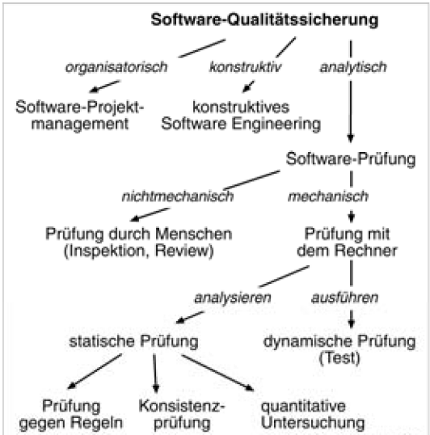
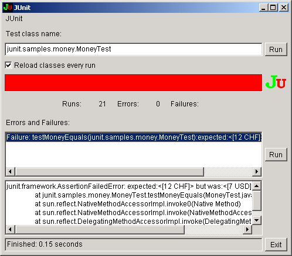
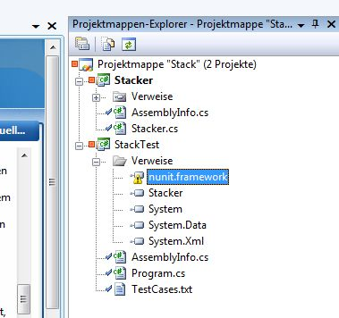
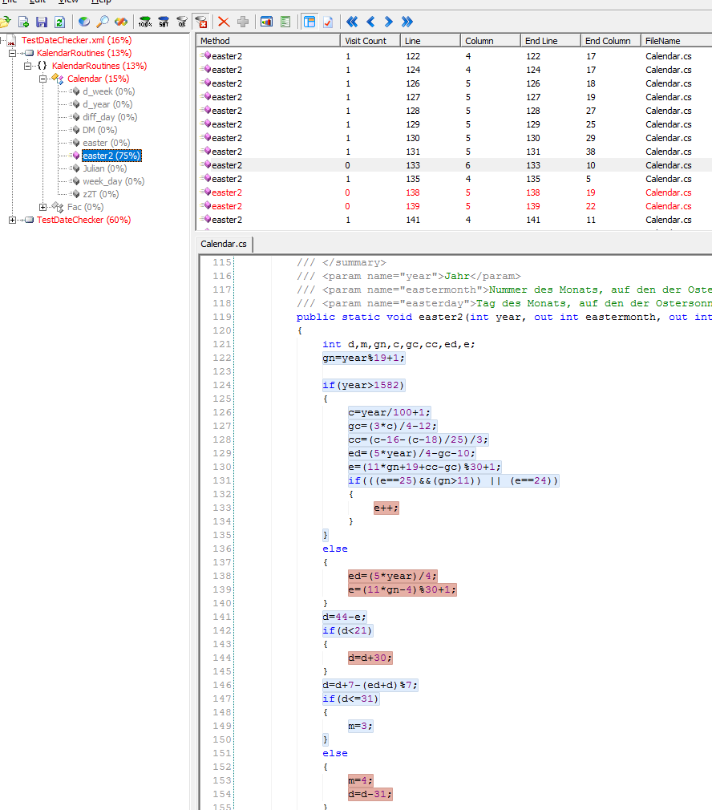

Testverfahren¶
Schon immer war das Testen von Software bzw. das Finden von Fehlern ein integraler Bestandteil jeder Programmierung bzw. der Sicherung der Softwarequalität.

Die unterschiedlichen Arten des Sicherung von Softwarequalität können wie folgt beschrieben werden.
Testverfahren sind ein wichtiger Bestandteil für das Einhalten von Softwarequalität und integraler Bestandteil moderner Softwareentwicklung. Sie sollte sich mittlerweile aus dem „hässlichen Entlein“ zum „Goldenen Schwan“ entwickelt haben, da es sich eigentlich keine Softwarefirma leisten kann, seine Produkte ohne vernünftige Tests auszuliefern.
Die folgenden Erläuterungen beziehen sich lediglich auf unterschiedliche Arten von Komponententests. Eine detaillierter Klassifikation steht unter https://de.wikipedia.org/wiki/Softwaretest>_ sowie http://www.german-testing-board.info/lehrplaene/istqbr-certified-tester-schema/glossar/> zur Verfügung.
Komponententest¶
Der Modultest, auch Komponententest oder Unittest genannt, ist ein Test auf der Ebene der einzelnen Module der Software. Testgegenstand ist die Funktionalität innerhalb einzelner abgrenzbarer Teile der Software (Module, Programme oder Unterprogramme, Units oder Klassen). Testziel dieser häufig durch den Softwareentwickler selbst durchgeführten Tests ist der Nachweis der technischen Lauffähigkeit und korrekter fachlicher (Teil-) Ergebnisse. (Wikipedia)
Blackbox¶
{kind=link}
Der Black-Box-Test testet eine Komponente ohne das Wissen um dessen Implementierung. Er kann deshalb nur prüfen, ob eine Eingabe von bestimmten Werten zu einem erwarteten Ergebnis führt. Die Testfälle werden deshalb ausschließlich aus der Spezifikation der Komponente abgeleitet.
Da die Anzahl der Testfälle pro Komponente theoretisch unbegrenzt sind, haben sich bestimmtet Techniken der Eingrenzung der Testkombinationen gebildet.
Äquivalenz-Klasse
Damit ist der Umstand gemeint, dass eine Komponente häufig einen bestimmten Wertebereich an möglichen Eingabewerten vorsieht. Ziel ist es nun, durch die Auswahl typischer und untypischer Eingabewerte eine hohe Abdeckung möglicher Werte zu erreichen.
Beispiel
public void DayOfWeek(int year, int month, int day)
{
....
}
Geben Sie mögliche und unmögliche Wertebereiche für diese Methode vor.
Grenzwerte
Da Funktionen häufig an den Grenzen von Schleifen felerhaft implementiert sein können, testet man diese Grenzwerte isoliert. Im obigen fall könnte dies sein:
Grenzwerte
- der 1. Tag eines Monats
- der 31.12. eines Jahres
- das Datum eines Schaltjahr
- unmögliche Werte
1 2 3 4 5 6 7 8 9 10 11 12 13 14 15 16 17 18 19 20 21 22 23 | public static void testDayOfWeekBoundary()
{
int i,n,wd,day=0, month=0, year=0;
year = 2000; n=11;
Console.WriteLine("Testfall" + "\t" + "Tag" +"\t"+ "Monat" + "\t" + "Jahr" + "\t" + "Wochentag");
for (i=3;i<=n;i++)
{
if (i==3) {day=1; month=1;}
if (i==4) {day=31; month=12;}
if (i==5) {day=0; month=1;}
if (i==6) {day=32; month=1;}
if (i==7) {day=7; month=0;}
if (i==8) {day=7; month=13;}
if (i==9) {day=8; month=1;year=0;}
if (i==10) {day=8; month=1;year=-1;}
if (i==11) {day=8; month=12;year=9999;}
wd = Calendar.d_week(day, month, year);
Console.WriteLine(i +"\t\t" + day + "\t" + month + "\t" + year + "\t" + wd + " ");
}
}
|
Modultest (Unit-Tests)¶
Ein Unit-Test testet eine in sich geschlossene logische Komponente eines Programms. Diese Komponente ist häufig eine Methode, sie kann aber auch größere Konstrukte betreffen.
Sie sollten folgende Anforderungen erfüllen:
- Automatisiert und wiederholbar
- Einfach zu erstellen
- Einmal geschrieben und für die Zukunft nutzbar
- Von jedem Entwickler ausführbar sein
- Einfach zu starten sein (Knopfdruck)
- Schnell sein
Unit-Tests entsprechen von ihrer Absicht her eigentlich den sog. Black-Box-Tests. Durch die Verwendung von Unit-Test-Frameworks haben sie mittlerweile einen gewisse Eigenständigkeit erreicht.
UnitTest-Frameworks¶
Für fast jede Programmiersprache sind mittlerweile Frameworks erhältlich, die ein relativ komfortables Schreiben von Unittests ermöglicht. Sie entwickelten sich konzeptionell aus dem JUnit-Framework.
Das NUnit-Framework wird in VisualStudio per Referenz oder über den PackageManager NuGet installiert. Über einen zusätzlich zu installierenden TestAdapter können die Tests auch sehr bequem ausgeführt werden.
Damit NUnit zu testende Klassen erkennt, müssen Klassen und Methoden mit bestimmten Attributen belegt werden. So definiert das Attribut [TestFixture] eine Klasse als Testklasse; das Attribut [Test] eine Methode als Testmethode.
Die Namen der Testmethoden sollten so gewählt werde3n, dass sie die Absicht des Tests ausdrücken. In diesem Sinne ist der unten verwendete Methodenname nicht aussagefähig genug und sollte beispielsweise in Test_Correct_EasterMonth_and_EasterDate_For Year benannt werden.
using KalendarRoutines;
using NUnit.Framework;
namespace TestKalendarRoutines
{
/// <summary>
/// Zusammenfassung für Class1.
/// </summary>
[TestFixture]
public class TestKalendarRoutines
{
....
....
[Test]
public void NU_Test_Easter()// better MethodName *Test_Correct_EasterMonth_and_EasterDate_For Year*
{
int day;
int month;
Calendar.easter(1998, out month, out day);
Assert.AreEqual(4, month);
Assert.AreEqual(12, day);
}
TestDrivenDevelopment¶
Die Idee von Unit-Tests kann noch weiterentwickelt werden. Was hindert den Entwickler daran, vor dem Programmieren der Methoden schon die Tests für diese Methoden zu schreiben.
Diskussion
Erarbeiten Sie Gründe für und gegen diesen Ansatz
Stacker goes TDD¶
Im folgenden Beispiel wird der TestDriven-Ansatz anhand einer zu entwickelnden Stack-Klasse dargestellt.
Ihre Aufgabe besteht darin, einen unbegrenzten Stack zu implementieren. Ein Stack ist normalerweise eine Datenstruktur (Collection), die den Zugriff auf das zuletzt eingefügte Element beschränkt.
Folgende Operationen werden unterstützt:
- Push Die Push-Funktion fügt ein Element oben auf den Stack hinzu
- Pop Die Pop-Function nimmt das oberste Element vom Stack und gibt es zurück
- Top Die Top-Funktion gibt das oberste Element vom Stack zurück, löscht es aber nicht
- IsEmpty Die IsEmpty-Funktion gibt true zurück, wenn kein Element auf dem Stack liegt.

Aufgabe
Überlegen Sie sich Testfälle, die die gewünschten Anforderungen abdecken
Lösung
- Create a Stack and verify that IsEmpty is true.
- Push a single object on the Stack and verify that IsEmpty is false.
- Push a single object, Pop the object, and verify that IsEmpty is true.
- Push a single object, remembering what it is; Pop the object, and verify that the two objects are equal.
- Push three objects, remembering what they are; Pop each one, and verify that they are removed in the correct order.
- Pop a Stack that has no elements.
- Push a single object and then call Top. Verify that IsEmpty is false.
- Push a single object, remembering what it is; and then call Top. Verify that the object that is returned is the same as the one that was pushed.
- Call Top on a Stack with no elements.
Aufgabe
Erstellen Sie in VisualStudio ein neue Projektmappe, welches zwei Projekte aufnimmt. Referenzieren Sie im StackTest-Projekt die zu programmierende Stacker.dll.
Test 1¶
Beim Schreiben der Testfälle ist selbstverständlich nachdenkenswert, mit welchem Fall man beginnt. Häufig wird man den Testfall auswählen, der das am häufigsten verwendete Szenario abbildet.
Create empty stack and verify thait isEmpty is True
Folgende Aufgaben sind vorzunehmen:
- Instanziierung eines Stacks
- Aufruf einer IsEmpty-Property
- IsEmpty sollte true zurückgeben, da noch keine Elemente im Stack vorhanden sind
[Test]
public void Empty()
{
Stacker stack = new Stacker();
Assert.IsTrue(stack.IsEmpty);
}
TDD definiert, dass ein Test vor dem Schreiben der Funktionalität geschrieben werden soll. Der Test wird deshalb nicht ausgeführt, sondern sogleich die isEmpty-Property der Stacker-Klasse implementiert.
Überlegung
Welche Aufwand ist notwendig, damit der Test erfolgreich ist ?
TDD folgt dem YAGNI-Prinzip. Schreibe nur soviel Code, dass der Test funktioniert. Im einfachsten Falle sieht das dann so aus:
public class Stacker
{
private bool isEmpty = true;
public bool IsEmpty
{
get
{
return isEmpty;
}
}
}
Bemerkung
Martin Fowler sagt zu dieser „denkwürdigen“ Implementierung Folgendes:
There is a balance to achieve between anticipating future tests and implementation and being totally ignorant of the next test. In the beginning, you should focus on the test you are writing and not think about the other tests. As you become familiar with the technique and the task, you can increase the size of the steps. You should always keep in mind that large steps are harder to debug than smaller steps. Also, if your code is too complicated or provides functionality that is not tested, additional refactorings can result later.
This discussion is also relevant to the earlier discussion about the test list. It is very clear from the test list that you have to store multiple items. Should you go ahead and use an ArrayList because you might need it later? No—the current tests do not support the need for an ArrayList. Wait and see what the tests look like before making that decision.
Test 1¶
**Push a single object on the Stack and verify that IsEmpty is false **
Der Test verlangt, dass nach dem Einfügen eines Objektes die IsEmpty-Eigenschaft false ergeben muss. Dies kann durch folgenden Code erreicht werden
[Test]
public void PushOne()
{
Stack stack = new Stack();
stack.Push("first element");
Assert.IsFalse(stack.IsEmpty, "After Push, IsEmpty should be false");
}
Um dieses Testcode laufen lassen zu können, benötigen wir eine Push-Methode in der Stack-Klasse. Die minimale Implementierung sieht wie folgt aus:
public void Push(object element)
{
}
Die Unit-Tests schlagen aber fehl, da isEmpty immer noch True zurückliefert. Deshalb muss die Implementierung leicht geändert werden.
public void Push(object element)
{
isEmpty = False;
}
Die Push-Methode macht es auch erfoderlich, dass die Elemente in einer Art Liste gehalten werden. Da es aber zur Zeit keine Tests für diese Notwendigkeit gibt, warten wir damit noch.
Refactoring¶
Beide Testmethoden erzeugen jeweils ein neues Stack-Objekt. Dies und weitere Gemeinsamkeiten kann in eine Init-Methode ausgelagert werden, die das NUnit-Attribute [Setup] erhält.
using System;
using NUnit.Framework;
[TestFixture]
public class StackFixture
{
private Stacker stack;
[SetUp]
public void Init()
{
stack = new Stacker();
}
[Test]
public void TestIFNewStackIsEmpty()
{
Assert.IsTrue(stack.IsEmpty);
}
[Test]
public void PushOneElementOnStack_isEmpty_is_False()
{
stack.Push("first element");
Assert.IsFalse(stack.IsEmpty, After Push, IsEmpty should be false);
}
}
- Private Instanzvariable stack, auf die alle Methoden zugreifen können.
- Funktion Init hat ein Setup-Attribut. Dies wird von NUnit verwendet und stellt sicher, dass dieser Code vor jedem Test ausgeführt wird .
- Es wird damit sichergestellt, dass jeder Test mit einer frischen Stack-Klasse durchgeführt wird.
Test 3:¶
^ Push a single object, Pop the object, and verify that IsEmpty is true
Dieser Test führt eine neue Methode Pop() ein, welches das oberste Element zurückgibt und es gleichzeitig vom Stack nimmt.
Um dieses Verhalten zu testen, müssen wir
- Ein Element auf den Stack legen
- Das Element vom Stack nehmen
- Die IsEmpty-Property aufrufen und als Rückgabewert ein true erhalten
[Test]
public void Pop()
{
stack.Push("first element");
stack.Pop();
Assert.IsTrue(stack.IsEmpty, "After Push - Pop, IsEmpty should be true");
}
Der Code compiliert nicht, weil wir die Pop-Methode noch nicht implementiert haben.
public void Pop()
{
isEmpty = true;
}
Bemerkung
Notice that the implemented Pop method returns void. The requirements stated previously said that Pop should also return the topmost element. Because we do not have a test that tests that functionality, we will leave it that way until we have a failing test.
So far, we have been concerned with verifying that the IsEmpty property on the Stack is correct in regard to the Push and Pop operations. However, this is leading to code that does not further our understanding of the problem. In fact, we have written three tests that manage a Boolean variable.
It is now time to change direction and look at the actual objects that are pushed and popped onto the Stack.
Test 4¶
Push a single object, remembering what it is; Pop the object, and verify that the two objects are equal.
Die folgende Methode PushPop-ContentCheck +berprüft, ob das erzeugte Objekt auf den Stack gelegt, anschließend zurückgeholt wird und die Objektgleichheit gegeben ist.
[Test]
public void PushPopContentCheck()
{
int expected = 1234;
stack.Push(expected);
int actual = (int)stack.Pop();
Assert.AreEqual(expected, actual);
}
Natrlich kann der Code nicht compilieren. Die Pop-Methode ist void, nicht vom Typ object. Um die Pop-Methode ein object zurückliefern zu lassen ist der einfachste Weg der folgende:
public object Pop()
{
isEmpty = true;
return null;
}
Der Test schlägt aberfehl weil wir nicht den Wert zurücklieferten, der auf dem Stack lag. Damit dies funkioniert müssen wir die Pop-Methode und die Implementierung der Stacker-Klasse ändern.
public class Stack
{
private bool isEmpty = true;
private object element;
public bool IsEmpty
{
get
{
return isEmpty;
}
}
public void Push(object element)
{
this.element = element;
isEmpty = false;
}
public object Pop()
{
isEmpty = true;
object top = element;
element = null;
return top;
}
}
Alle Tests funktionieren und wir können wieder einen Testfall abhaken.
Allerdings führen wir noch ein kleines Refactoring durch. Wir ersetzen die isEmpty-Variable durch eine Bedingung, welche die element-Variable prüft. Dies ist ein besserer Ansatz, weil wir die element-VAriable selbst nehmen, ob zu bestimmen ob der Stack leer oder gefüllt ist.
using System;
public class Stack
{
private object element;
public bool IsEmpty
{
get
{
return (element == null);
}
}
public void Push(object element)
{
this.element = element;
}
public object Pop()
{
object top = element;
element = null;
return top;
}
}
Test 5:¶
**Push three objects, remembering what they are; Pop each one, and verify that they are correct. **
Der vorhergehende Test setzte und löschte jeweils nur ein Item. In diesem Test wollen wir drei Objekte nutzen um sicherzustellen, dass der Stack in der gewünschten Art und Weise funktioniert.
//Test 5
[Test]
public void PushPopMultipleElements()
{
string pushed1 = "1";
stack.Push(pushed1);
string pushed2 = "2";
stack.Push(pushed2);
string pushed3 = "3";
stack.Push(pushed3);
string popped = (string)stack.Pop();
Assert.AreEqual(pushed3, popped);
popped = (string)stack.Pop();
Assert.AreEqual(pushed2, popped);
popped = (string)stack.Pop();
Assert.AreEqual(pushed1, popped);
}
Mit dem Test wollen wir sicherstellen, dass die Objekte in der umgekehrten Reihenfolge vom Stack gelöscht und zurückgeliefert werden.
Der Code compiliert, aber NUnit meldet folgenden Fehler:
Tests run: 5, Failures: 1, Not run: 0, Time: 0.031238 seconds
Failures:
1) StackFixture.PushPopMultipleElements :
expected:<"2">
but was:<(null)>
at StackFixture.PushPopMultipleElements() in c:\stackfixture.cs:line 59
Eigentlich ist der Fehler klar: Wir kommen nicht mehr mit unserer einfachen Implementierung der Stack-Klasse aus. Wir benötigen eine Collection, um die verschiedenen Elemente des Stacks zu verwalten.
Dieser Umbau erfordert einige Refactorisierungen, letztendlich ändert sich die Stacker-Klasse wie folgt:
using System;
using System.Collections;
public class Stack
{
private ArrayList elements = new ArrayList();
public bool IsEmpty
{
get
{
return (elements.Count == 0);
}
}
public void Push(object element)
{
elements.Insert(0, element);
}
public object Pop()
{
object top = elements[0];
elements.RemoveAt(0);
return top;
}
}
Der Code compiliert und alle Tests funktionieren, obwohl wir fundamentale Änderungen am Quellcode vorgenommen haben.
Bemerkung
This example shows very well the benefits of delaying implementation decisions while writing tests. Some would argue that we should have started out using an ArrayList to hold the elements of the Stack because it was a fore-gone conclusion that we would need a collection to hold the elements.
We did not do this because we are trying to let the tests drive the need for functionality instead of us thinking we know what is needed and then writing tests that verify that thinking. It is a difference that this test demonstrates very clearly.
Test 6¶
**Pop a Stack that has no elements. **
Was soll geschehen, wenn wir die Pop-Methode auf einen Stack anwenden, der kein Element besitzt. Es gibt mehrere Optionen:
- Wir können null zurückgegeben (obwohl wir niemals einen null-Wert auf dem Stack legen könnten)
- Wir könnten einen in/out-Parameter benutzen, der den Erfolg oder Misserfolg der Operation anzeigt. Diese Methode ist umständlich, weil der Nutzer den Wert prüfen muss, um den Erfolg/Misserfolg zu bestimmen.
- Wir könnten eine Exception werden, weil dies ein unerwarteter Fehler darstellt, der nicht auftreten sollte.
Es macht wohl am meisten Sinn, eine Exception zu werfen. Wir schreiben einen Test, der das Werfen einer Exception von der Pop-Methode erwartet:
Wir müssen die Pop-Methode ändern, um zu prüfen, ob es überhaupt schon Elemente in der ArrayList gibt und gegebenenfalls eine InvalidOperationException werfen.
public object Pop()
{
if(IsEmpty)
{
throw new InvalidOperationException("cannot pop an empty stack");
}
object top = elements[0];
elements.RemoveAt(0);
return top;
}
Der Test funktioniert, lässt uns aber gleichzeitig an neu zu implementierende Tests denken, die die Behandlung von null-Werten zum Thema haben.
- Push null onto the Stack and verify that IsEmpty returns false.
- Push null onto the Stack, Pop the Stack, and verify that the value returned is null.
- Push null onto the Stack, call Top, and verify that the value returned is null.
Test 7:¶
Push a single object and then call Top. Verify that IsEmpty returns false.
Die Top-Methode ändert nicht den Zustand des Stacks, sie gibt lediglich das oberste Element zurück. Der Test stellt sicher, dass IsEmpty nicht vom Top-Aufruf berührt wird.
[Test]
public void PushTop()
{
stack.Push(“42â€);
stack.Top();
Assert.IsFalse(stack.IsEmpty);
}
Der Test kann nicht funktionieren, weil es noch keine Top-Methode gibt. Eine erste, gefakte Top-Methode könnte so aussehen:
public object Top() {
return null;
}
Beim Implementieren der Methode fallen uns weitere Test-Fälle ein:
- Füge mehrere Objekte dem Stack hinzu und stelle sicher, dass die Top-Methode immer das richtige Objekt zurückliefert.
- Füge eine Objekt dem Stack hinzu, rufe Top wiederholt auf und stelle sicher, dass immer dasselbe Objekt zurückgeliefert wird, das auch auf den Stack gelegt wurde.
Test 8:¶
**Push a single object, remembering what it is; and then call Top. Verify that the object that is returned is equal to the one that was pushed. **
Während der letzte Test die Korrektheit der IsEmpty-Methode prüfte, wird nun geprüft, ob wir das gleiche Objekt zurückerhalten, was als letztes auf den Stack gelegt wurde.
[Test]
public void PushTopContentCheckOneElement()
{
string pushed = "42";
stack.Push(pushed);
string topped = (string)stack.Top();
Assert.Equals(pushed, topped);
}
Beim Ausführen erzeugt NUnit folgende Fehlermeldung:
Tests run: 8, Failures: 1, Not run: 0, Time: 0.0312442 seconds
Failures:
1) StackFixture.PushTopContentCheckOneElement : expected:<"42">
but was:<(null)>
at StackFixture.PushTopContentCheckOneElement()
in c:\stackfixture.cs:line 84
Die gefakte Implementierung der Top-Methode muss wohl verbessert werden.
public object Top()
{
return elements[0];
}
Test 9:¶
Push multiple objects, remembering what they are; call Top, and verify that the last item pushed is equal to the one returned by Top.
Wir müssen mehr als ein Element auf den Stack legen. Der Return-Wert von Top sollte gleich dem Wert sein, der als letztes eingefügt wurde.
[Test]
public void PushTopContentCheckMultiples()
{
string pushed3 = “3";
stack.Push(pushed3);
string pushed4 = “4";
stack.Push(pushed4);
string pushed5 = “5";
stack.Push(pushed5);
string topped = (string)stack.Top();
Assert.AreEqual(pushed5, topped);
}
Der Test scheint zu funktionieren.
Test 10:¶
Push one object and call Top repeatedly, comparing what is returned to what was pushed.
Die Top-Methode sollte nicht den Zustand des Objektes ändern, somit können wir ein Objekt auf den Stack legen und Top häufiger aufrufen; es sollte immer das gleiche Objekt zurückliefern.
[Test]
public void PushTopNoStackStateChange()
{
string pushed = "44";
stack.Push(pushed);
for(int index = 0; index < 10; index++)
{
string topped = (string)stack.Top();
Assert.AreEqual(pushed, topped);
}
}
Auch das funktioniert wie erwartet.
Test 11:¶
Call Top on a Stack that has no elements.
Konsistentes Verhalten ist der Schlüssel beim Design einer Klassenbibliothek. Wir haben bereits oben eine InvalidOperationException geworfen; deshalb sollten wir es wieder tun.
[Test]
[ExpectedException(typeof(InvalidOperationException))]
public void TopEmptyStack()
{
stack.Top();
}
Das kann natürlich nicht funktionieren.
Tests run: 11, Failures: 1, Not run: 0, Time: 0.031263 seconds
Failures:
1) StackFixture.TopEmptyStack : Expected: InvalidOperationException but was
ArgumentOutOfRangeException
at System.Collections.ArrayList.get_Item(Int32 index)
at Stack.Top() in c:\projects\book\stack\stack.cs:line 33
at StackFixture.TopEmptyStack() in c:\stackfixture.cs:line 119
Wir sollten etwas lernen: Das gleiche Fehlverhalten wie zunächst in der Pop-Methode.
public object Top()
{
if(IsEmpty) throw new
InvalidOperationException("cannot top an empty stack");
return elements[0];
}
Dies funktioniert. Die Ähnlichkeit der Top- und Pop-Methode ist jedoch so offensichtlich, dass ein Refactoring angebracht ist. Beide prüfen, ob Elemente in der Liste sind und werfen eventuell eine Ausnahme. Die beste Lösung wäre damit wenn Pop die Top-Methode aufruft.
public object Pop()
{
object top = Top();
elements.RemoveAt(0);
return top;
}
public object Top()
{
if(IsEmpty)
throw new InvalidOperationException(“Stack is Emptyâ€);
return elements[0];
}
Dies funktioniert; Code Duplication wurde vermiden.
Coverage(Black- und White)¶
Unter Code-Coverage wird verstanden, wie hoch der Anteil des abgedeckten Quellcodes durch die Tests tatsächlich ist. Es setzt dafür das Vorhandensein des Quellcodes voraus; dennoch können natürlich die Tests des Black-Box-Verfahrens dafür verwendet werden.
Die Abdeckung des Quellcodes wird in verschiedenen Graden gemessen.
int factorial(int x) {
int result = -1;
if(x >= 0) {
result = 1;
for(int i=2; i <= x; i++) {
result = result * i;
}
}
else {
}
return result;
}
{kind=link}
Anweisungsüberdeckung C0 - Maß:
Jede Zeile des Quellcodes muss mindestens einmal durchlaufen worden sein. Dies ist der heutige Standard bei Tests.
Anweisungsüberdeckung = Anzahl ausgeführte Anweisungen / Gesamtzahl der Anweisungen
Im obigen Beispiel würde diese Bedingung mit einem Testfall erfüllbar sein: T1(x = 2)
Zweigüberdeckung C1 - Maß:
Die Zweigüberdeckung (engl. branch coverage) zur Ermittlung der Testfälle konzentriert sich auf die einzelnen Zweige des Testobjekts. Zweige stellen hier die Wegabschnitte des Kontrollflusses durch den Code des Testobjekts dar. Je nach festgelegtem Ziel sind ein gewisser Anteil oder alle Zweige im Code des Testobjekts zu durchlaufen. Um die dazu notwendigen Testfälle zu identifizieren, orientiert man sich üblicherweise am Kontrollflussgraphen des Testobjekts.
Im obigen Beispiel muss zusätzlich zu T1 (x = 2) noch der else-teil durchlaufen werden. Dies kann beispielsweise mit T2 (x = -1= erreicht werden.
In heutigen Testszenarien wird ebenaso eine 100 % ige Testabdeckung verlangt.
Zweigüberdeckung = Anzahl ausgeführte Zweige / Gesamtzahl der Zweige
Pfadabdeckung C2 - Maß:
Die Pfadüberdeckung (engl. path coverage) zur Ermittlung der Testfälle konzentriert sich auf die einzelnen Pfade des Testobjekts. Pfade stellen hier die möglichen *Gesamtwege* des Kontrollflusses durch den Code des Testobjekts dar. Je nach festgelegtem Ziel sind ein gewisser Anteil oder alle Pfade im Code des Testobjekts zu durchlaufen. Da reale Programme aber oft eine sehr große Anzahl von möglichen Pfaden aufweisen, ist ein Durchlaufen sämtlicher Pfade während des Tests u.U. nicht möglich, zum Beispiel bei Schleifen. Um die bei der Pfadabdeckung notwendigen Testfälle zu identifizieren, orientiert man sich auch hier sinnvollerweise am Kontrollflussgraphen des Testobjekts.
Das C2-Abdeckungsmaß schreibt dazu vor, dass Testfälle generiert werden müssen, die
- enthaltene Schleifen nicht durchlaufen
- enthaltene Schleifen nicht oft durchlaufen
- enthaltene Schleifen oft durchlaufen
wobei alle drei Bedingungen durch die Menge der Testfälle abgedeckt werden müssen. Für die Methode factorial entspricht das den folgenden Testfällen:
- Testfall #1 x = -1 a, c, k
- Testfall #2 x = 0 a, b, d, h, i, k
- Testfall #3 x = 2 a, b, d, e, f, i, k
- Testfall #4 x = 7 a, b, d, [e, f, g]5038, e, f, i, k
Der Wert für häufige Schleifendurchläufe wurde hier auf 5039 festgelegt, um die Ausführungsdauer von Testfall #4 zu begrenzen. Die Entscheidung, wie oft eine Schleife im Test durchlaufen werden sollte, hängt jedoch stark vom Testobjekt, der zu Verfügung stehenden Hardware, und dem zu erwartenden Kosten-Nutzen-Verhältnis ab.
Wird der White-Box-Test zusammen mit entsprechenden Visualisierungstools eingesetzt (z.B. NCover, CodeCover), so kann man einen recht guten Überblick über den Testabdeckungsgrad erhalten.
{kind=link}